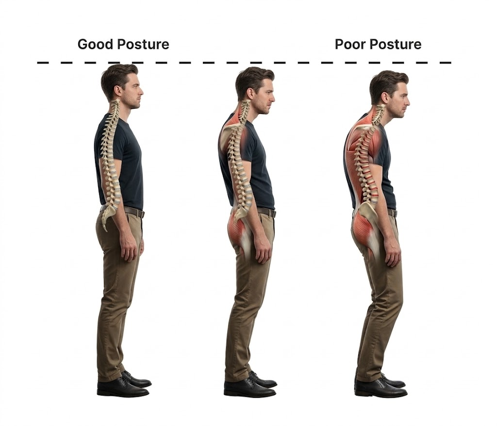

Esercizio 1 Finding your Vocal range
Il Range vocale rappresenta la nostra estensione vocale in base alla nostra tonalità più bassa e più alta che riusciamo a raggiungere. Sei un basso, baritono, tenore, contralto, mezzosoprano, soprano?


La postura nel canto dovrebbe essere eretta, con corpo rilassato e non rigido. Le gambe dovrebbero essere leggermente aperte e piegate in avanti.
Il Range vocale rappresenta la nostra estensione vocale in base alla nostra tonalità più bassa e più alta che riusciamo a raggiungere. Sei un basso, baritono, tenore, contralto, mezzosoprano, soprano?